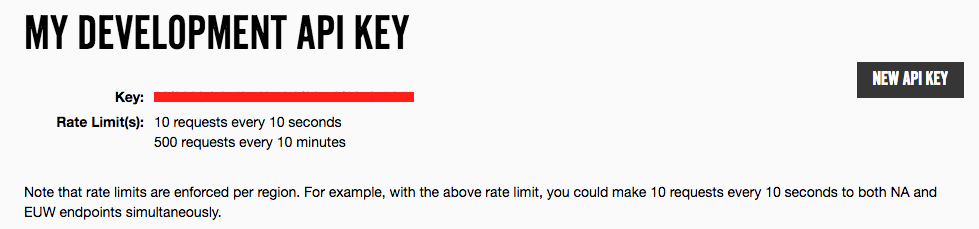
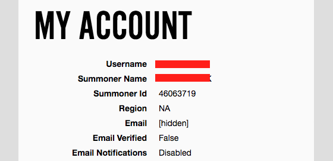

Getting an API Key
API Keys are how Developers are identified on a site
The two things you need to make query's with the Riot API are an API key and your Summoner ID
The first step to using the Riot API is to sign up and get a developer (API) key. Click the Sign In button on the top right of the main page and sign in with your League of Legends account info.
Here you can see your API key and the amount of requests you can make per minute. Rate limiting is a way to reduce the strain on the riot API. This will make more sense when we get into making requests.
Now head over to your profile and note down your summoner ID from this page.
Now that we have everything we need, let's learn how to use AJAX to get information from the Riot API